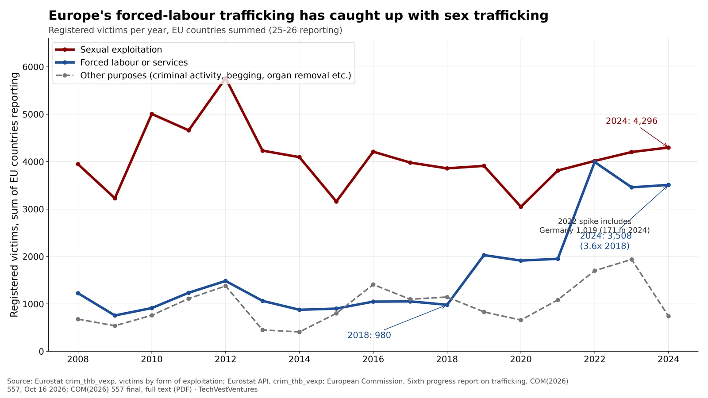
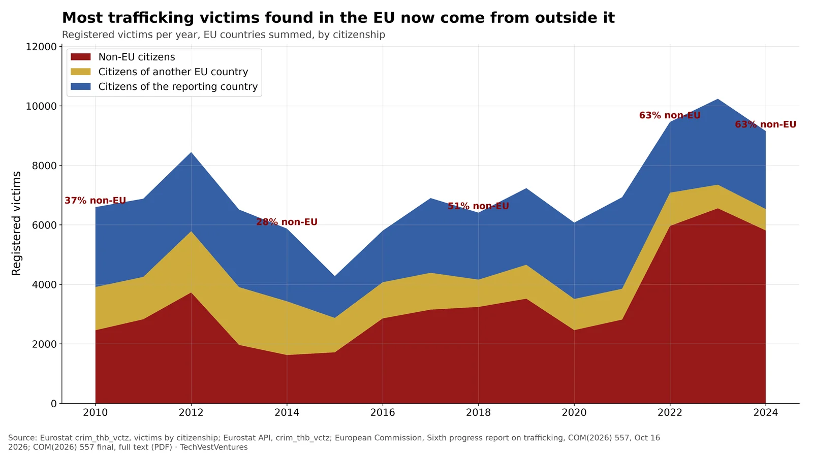

Q9. EU Victims

Registered trafficking victims in EU countries (Eurostat crim_thb_vexp, updated Jun 2026; summed over the 25-26 EU states that report each year). Victims of forced labour or services rose from 980 in 2018 to 3,508 in 2024, while sexual-exploitation victims stayed near 4,000 (4,296 in 2024). In 2018 labour cases were a quarter the size of sex-trafficking cases; by 2024 they were 82% of it.
- Biggest 2024 labour-trafficking counts: France 752 (80 in 2018), Italy 749 (61), Netherlands 356, Spain 246, Poland 223, Greece 215.
- The Commission's Sixth Progress Report (Oct 16, 2026) counts 20,022 registered victims in 2023-2024, up 16.1% on 17,248 in 2021-2022; women and girls were 63%.
Note: Registered victims depend on how hard each country looks; a rise can mean more enforcement, not only more trafficking. Finland is missing for 2024; Germany's 2022 labour figure (1,019) is an outlier against 171 in 2024. Victims can be counted under more than one form.
Sources: Eurostat crim_thb_vexp, victims by form of exploitation Eurostat API, crim_thb_vexp European Commission, Sixth progress report on trafficking, COM(2026) 557, Oct 16 2026 COM(2026) 557 final, full text (PDF)

Registered trafficking victims in EU countries by citizenship (Eurostat crim_thb_vctz, updated Sep 10, 2026). Non-EU citizens were 5,812 of 9,153 victims in 2024 (63%), up from 37% in 2010; victims from other EU countries fell from 1,452 to 718. The jump came in 2022, the year of Russia's full-scale invasion of Ukraine.
- Non-EU victims by country, 2024: Italy 1,871 (314 in 2021), France 1,044, Netherlands 498, Spain 479, Greece 403.
- Intra-EU trafficking (e.g. Romanian and Bulgarian victims) is shrinking as a share, while victims from outside the EU dominate.
Note: Sweden did not report citizenship for 2024. Counts are registered victims only; the Commission says the actual number is "certainly higher" than reported. The 2022 timing matches the Ukraine refugee flow, but Eurostat does not break out Ukrainians here, so the link is not proven by this table.
Sources: Eurostat crim_thb_vctz, victims by citizenship Eurostat API, crim_thb_vctz European Commission, Sixth progress report on trafficking, COM(2026) 557, Oct 16 2026 COM(2026) 557 final, full text (PDF)